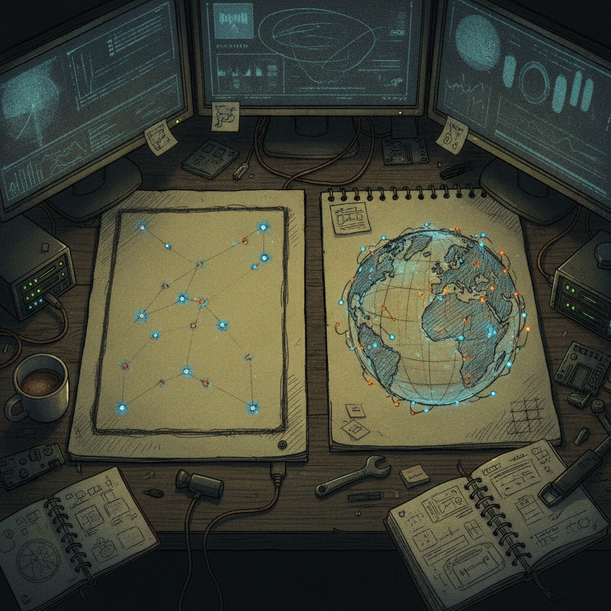

Why This Peer Globe Caught My Attention
I stopped scrolling on this one because of the line "I couldn't help myself." That is usually the whole reason a side project turns into a real tool. Someone builds the thing that works, then cannot leave it alone, and it gets better.
What was bookmarked
@AZurek17 posted the second half of a two-part build. Part one was a 2D map showing peer data (the post does not spell out exactly whose network or dataset, only that it works). Part two is the follow-up: a 3D globe version of that same visualization, built because a flat map did not satisfy the urge to see the data from every angle. The post includes a demo clip and asks what people think. No GitHub link, no docs, just the build itself.

Why it matters
This is a small post, but it touches on something worth paying attention to. Peer and node maps are a staple of crypto and P2P infrastructure. They show where a network physically lives, how spread out it is, and where the gaps are. Most of these visualizations stop at a flat map because that is the version that ships. Going from 2D to 3D for no reason other than curiosity is exactly the kind of scrappy iteration that turns a one-off dashboard into a genuinely useful tool. It also fits a pattern worth watching: solo builders shipping small, self-contained data visualizations instead of waiting on a bigger team to greenlight one.
The practical breakdown
What it does: Takes existing peer location or network data and renders it as an interactive 3D globe instead of, or alongside, a flat 2D map.
Who it helps: Anyone running or watching a distributed network (node operators, community members, curious builders) who wants a more intuitive feel for how spread out a network actually is. A globe reads distance and clustering more naturally than a flat projection does.
What problem it solves: Flat maps distort distance near the poles and can make global spread look more even, or more clustered, than it really is. A rotatable globe lets you check a hunch from another angle instead of trusting one static image.
What still needs work: There are no details on the data source, refresh rate, or whether this is a one-off demo versus something maintained going forward. No repo was linked in the post, so it is not clear yet whether this is open for others to reuse or fork.
What I would test first: Whether the globe holds up with a much larger peer count. 3D globes can get visually noisy fast once you are plotting thousands of points instead of dozens, so the real test is legibility at scale, not just the demo clip.
Rick's take
I like seeing this kind of iteration happen in public. A lot of people would have shipped the 2D map, called it done, and moved to the next idea. Building a second version just to see the data from another angle is a good habit, and it is the same instinct that turns a personal tool into something a whole community ends up relying on. I do not know yet what network this is mapping, but the build itself, going from "it works" to "let me see it a different way," is the part worth paying attention to regardless of the dataset.
What to watch next
Worth keeping an eye on whether @AZurek17 shares which network or dataset this pulls from, and whether the globe gets shared more broadly or stays a personal demo. If the underlying data updates live, this could turn into an actual monitoring tool rather than a one-time visualization. Nothing here is guaranteed to go anywhere, but it is a clean example of small tooling built for the fun of seeing something clearly.
Source and links
Source: X post by @AZurek17, https://x.com/i/web/status/2076308591758508253, retrieved on 2026-07-12. External references: none provided in the source post.